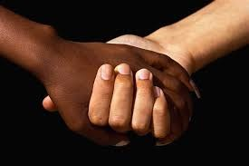
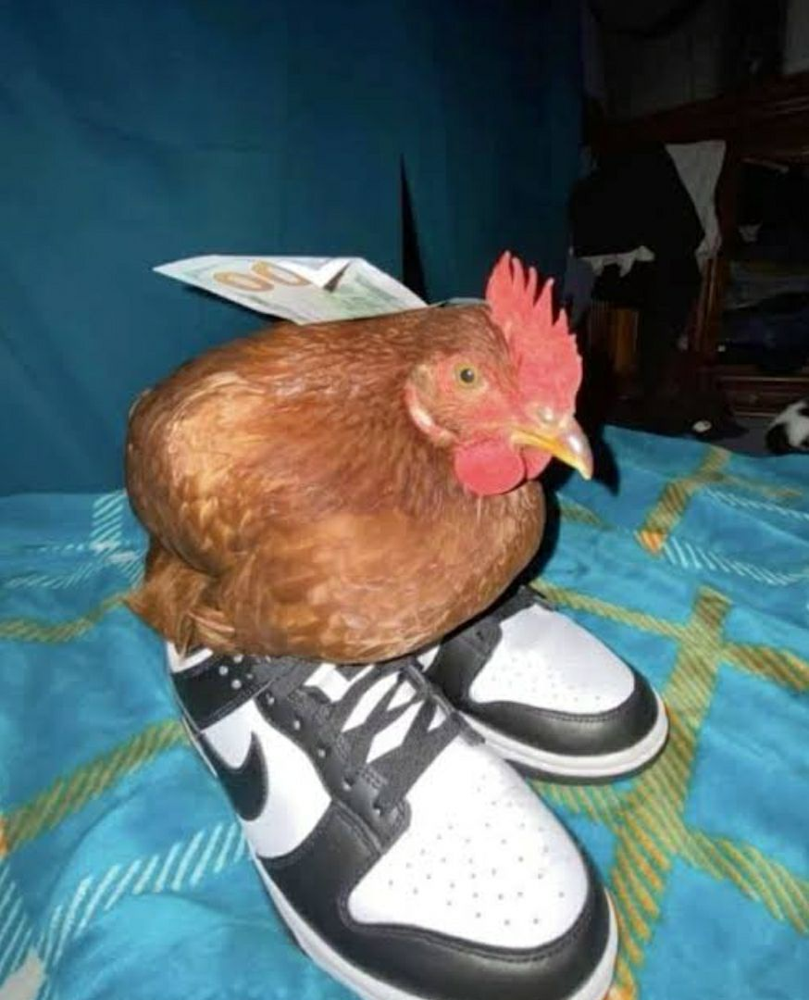
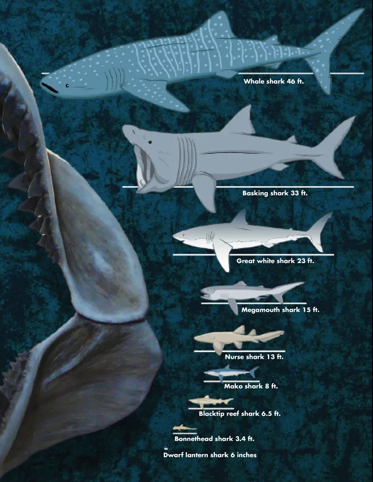
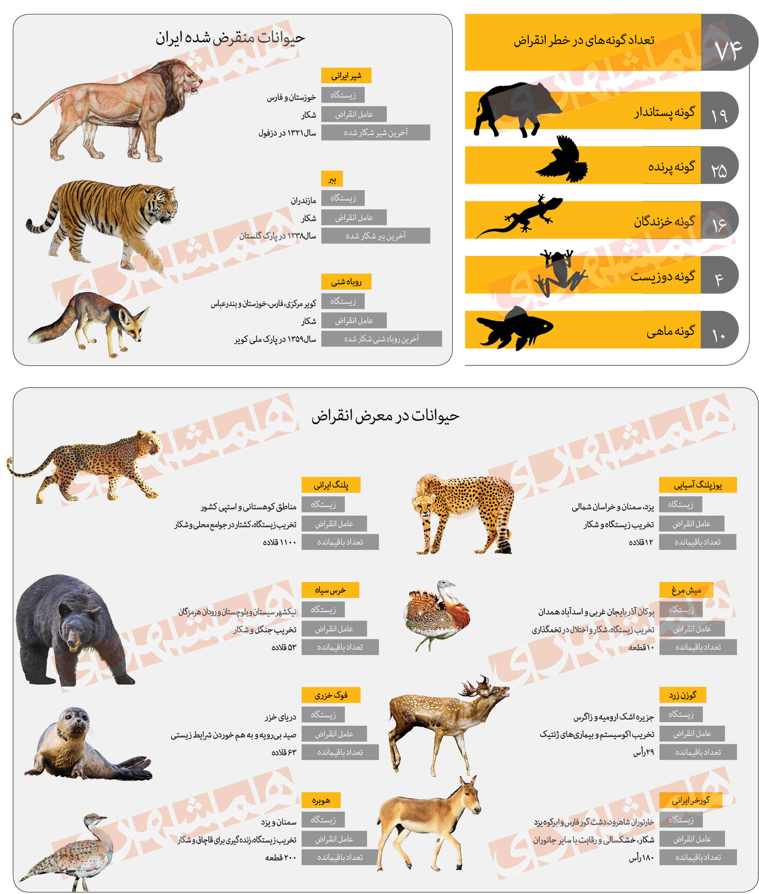
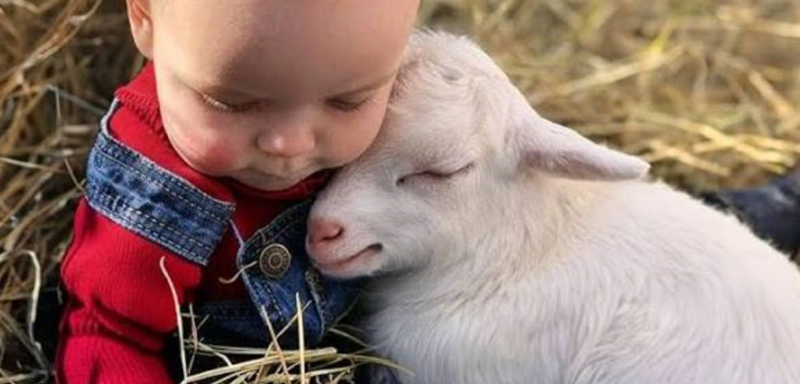
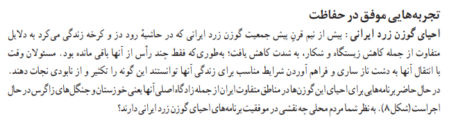
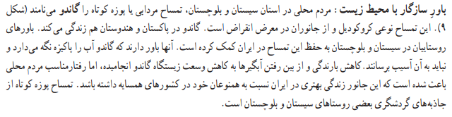

یه چی مهم
همه با همیم ولیکن در همیم (وابسته هستیم به هم)


سنجاب ایرانی از جوندگان کوچک است و در جنگلهای بلوط زندگی میکند
غذای اصلی این جانور بلوطه نه گوشت مخصوصا گوشت انسان را نمی خورد
و خب همه غذایی هم نمی خورد
او آذوقه ش رو دفن میکنه و درخت میشه
(اینجا به کتاب عربی ریفرنس داره)
ا
ز طرفی سنجاب غذای
جانورانی مانند روباه و مار است. این جانوران گوشت خوارند و ظاهرا نیازی به گیاهی مانند درخت بلوط ندارند، اما
زندگی آنها با واسطه
سنجاب به درخت بلوط پیوند میخورد. جنگل بلوط در زندگی و اقتصاد مردم محلی نیز نقش دارد؛ بنابراین حفظ این جنگلها
بر زندگی
انسانها نیز تأثیر میگذارد.
چه جالب!
مثال واقعی از وابسته بودن
سازمان سلامت جهانی در دهه ی 60 میلادی رای مبارزه با ماالریا در کشور برونئی
از سم دی دی تی
(با اون دیدی که فکر میکنین فرق می کنه)
برای کاهش جمعیت پشه ماالریا استفاده کرد.
شاید تعجب کنید که نتیجه
دراز مدت برنامه سم پاشی، فروریختن سقف کاهگلی خانهها و شیوع
بیماری طاعون بود! اما این اتفاق چگونه رخ داد ؟ سم، فقط پشهها را از بین نبرد؛ بلکه باعث مرگ زنبورهای وحشی نیز
شد.این زنبورها
ها از لارو هایی تغذیه میکردند که کاهگل سقف خانهها را میخوردند.در نتیجه با مرگ زنبورها، جمعیت لاروهای کاهگل
خوار افزایش
یافت و سقف خانهها فروریخت
گسترش بیماری طاعون نیز به علت افزایش جمعیت موشها بود .موش ناقل بیماری طاعون است. چگونه به کاربردن سم باعث
شده بود
جمعیت موشها افزایش یابد؟ گربهها دشمن طبیعی موشها هستند. سم روی جمعیت گربهها هم اثر گذاشته بود. علت مرگ
گربهها، خوردن
مارمولکهای مسمومی بود که از سقف سقوط میکردند. مارمولکها هم قربانی غذایشان، یعنی پشهها و حشرههای مسموم
بودند.در
نهایت، دست اندرکاران برای کنترل جمعیت موشها مجبور شدند به این جزیره گربه وارد کنند!
به قول کریتوس:
-There Are Consequences To Killing A God.
(هر کاری عاقبتی داره)
تنوع زیستی
برای توصیف گوناگونی حیات، واژه تنوع زیستی را به کار می برند.
تنوع زیستی

اهمیت و ارزش تنوع زیستی
مشاغل یا فعالیتهایی مانند صیادی، جمعآوری گیاهان دارویی
و چرای دام در مراتع، وابسته به تنوع زیستی است
نکته مهم*
انسان به عنوان اشرف مخلوقات
وظیفه دارد از حیات آنها حمایت کند!!!!!!
شاید شنیده باشید که کشور ایران از تنوع زیستی بالایی و ارزشمندی برخوردار است. حدود 8000 گونه گیاه آونددار در
ایران شناسایی
شده
.بسیاری از این گونهها،بومزاد یا انحصاری ایران و عناصر
باارزش و سرمایههای ملی محسوب میشوند.گونههای بومزاد، منحصر به یک منطقه جغرافیایی خاص اند و در جای دیگری وجود
ندارند در ایران بیش از 1170 گونه جانور مهره دار و تعداد فراوانی جانور بی مهره وجود دارد.

تنوع زیستی در خطر است
اگر محیط زیست برای حیات جانداری مناسب نباشد، ممکن است گونه به طور کامل نابود شود. به این
پدیده انقراض
میگویند
انقراض از ابتدای شکلگیری حیات روی کره زمین وجود داشته است؛ اما امروزه سرعت از بین رفتن گونهها افزایش یافته
است

چرا تنوع زیستی در خطر است؟
جواب ساده میشه وجود انسان ولی جواب منطقی تر برای ما کار هایی هست که انجام میدهیم مثل:
تخریب زیستگاه
برداشت بیرویه
واستفاده ناپایدار:
آلودگی محیط زیست
گونههای بیگانۀ مهاجم:
تغییر اقلیم

راه کار چیه؟
مناطق حفاظت شده
بانک ذخایر زیستی

